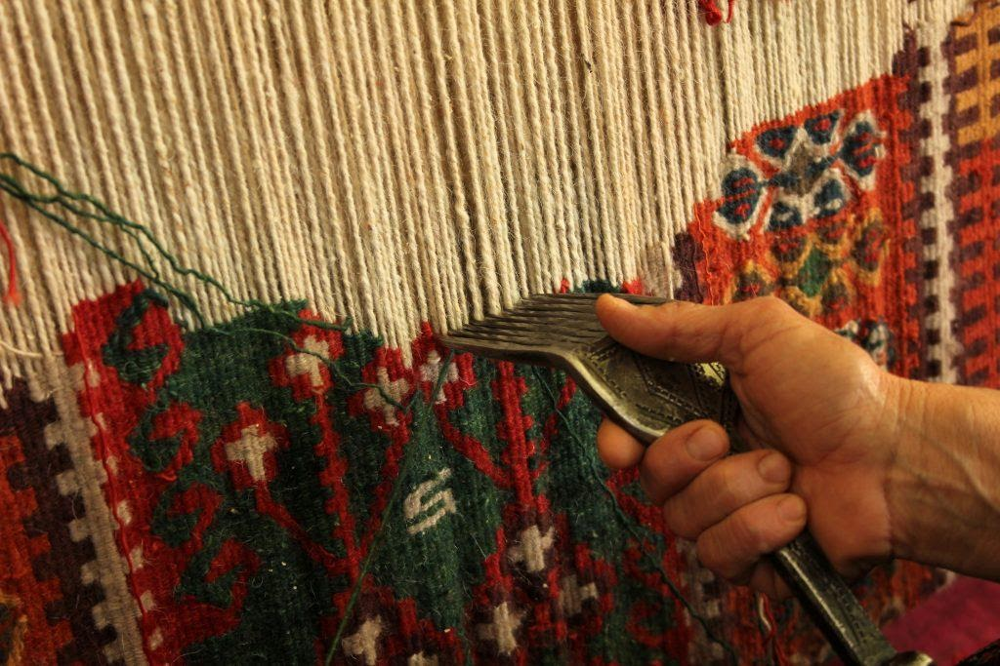
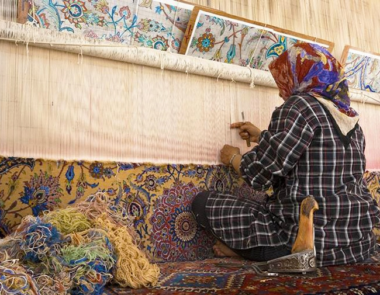
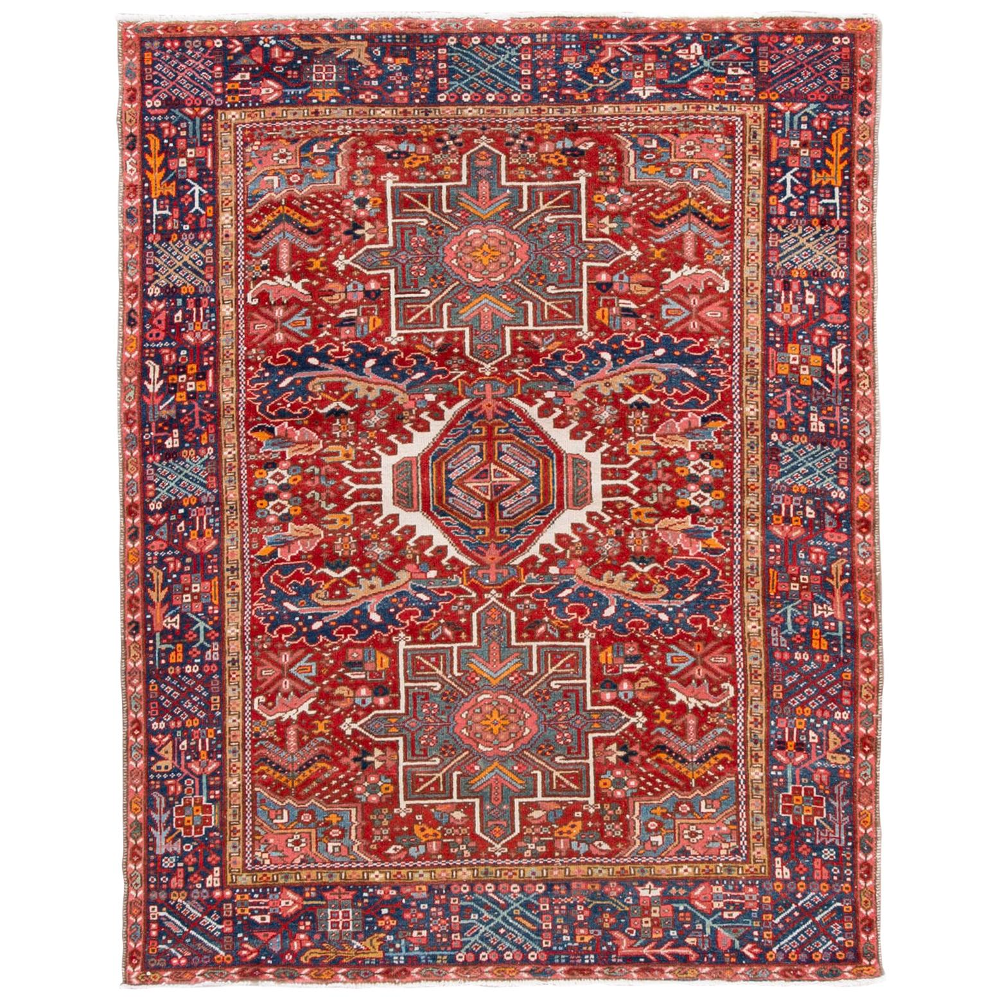

When Gucci Found Your Grandmother's Carpet
The $4,000 Gucci tote that went viral last season bore a pattern that carpet weavers in Tabriz have been knotting for three centuries. Their names are not in the press release. Their craft is, however, very much in the profit margin.
In the spring of 2024, a Gucci campaign landed with the particular kind of cultural thud that happens when a luxury brand reaches for "exotic" inspiration without looking closely at what it is holding. The bag, a structured leather tote in deep crimson and ivory, was covered in a pattern so distinctly Persian that Iranians on social media had identified the source within hours: a carpet pattern from Tabriz, Iran's northwestern carpet capital, standardized in weaving workshops there no later than the 17th century. The response from Gucci was silence, followed eventually by a statement that the pattern was "inspired by global heritage." A phrase capacious enough to mean anything and responsible enough to mean nothing.

Persian carpet design is not decoration. It is a codified language, a system of symbols, proportions, and color relationships passed through apprenticeships that could last a decade. The Herati pattern, one of the most copied geometric systems in carpet history, originated in Herat during the Timurid period and migrated into Iranian production in the 16th century. Variations of it appear today on Zara throw pillows and Urban Outfitters bedspreads. The weavers who developed it, the majority of whom are women in rural communities, earn less than $5 an hour. The brands reproducing their work do not name them.
This is the mechanism that has operated everywhere Persian design has traveled. A pattern is extracted, renamed, simplified, and eventually attributed to whoever simplified it rather than whoever invented it. Paisley is named after a town in Scotland. The original motif, boteh in Farsi, appears in Iranian art as early as the Sassanid period. Its shape, a teardrop curving like a flame, carries associations with fire and Zoroastrian symbolism that have nothing to do with a Scottish mill town. The renaming was not accidental. It was commercial.

The global market for luxury goods drawing on what brands call "global heritage aesthetics" is worth hundreds of billions of dollars annually. The communities whose visual traditions supply this market are rarely represented in the profits. A carpet that sells at auction for $30,000 may have taken two weavers eighteen months to complete. There is no intellectual property mechanism that protects traditional cultural expressions from this kind of extraction.
The question is not whether Persian design will continue to inspire the world. It will. The question is whether the world will eventually learn whose hands made it.
